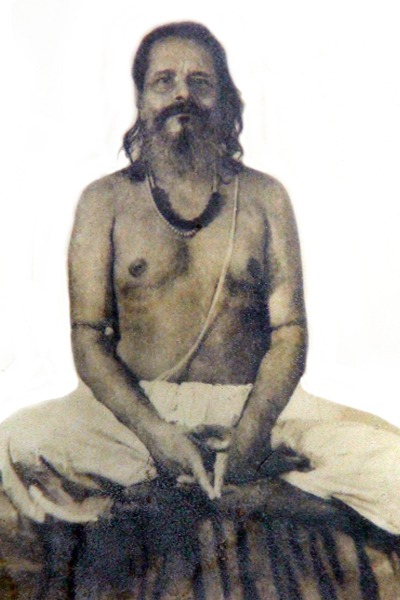
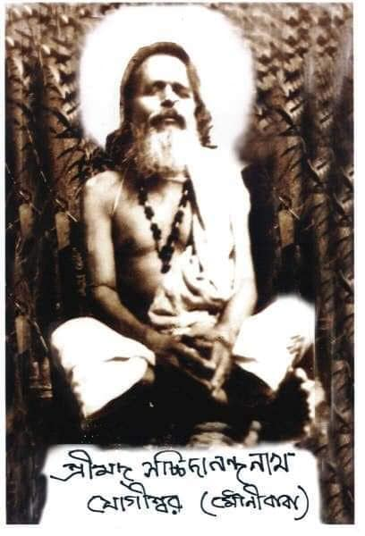

Sri Sri Anandamoy Mounibaba Mission
Welcome to the paradise of Humanity!
Biography of the Saint

Sadguru incarnate Sri Sri Mounibaba was born as Sri Ramesh Chandra Chakraborty on June 16th 1894 (Krishna Dwadashi tithi of Jaishtha in 1301 Bengali year) at Panchakhanda Nayagram in the district of Sylhet (now Bangladesh). His father's name was Sri Ramchandra Chakrabarty and his mother's name was Shrimati Sarvamangala Devi.
From his very childhood, Ramesh was very intelligent in his studies and had great physical strength. He had a divine character from the very beginning and possessed a spiritual mindset. His heart used to cry for the suffering of the mankind and always craved to do something great. While he was studying in class 10th, he met a very revered Vaishnav sanyasi named Haribol Baba in Karimganj, Assam. He used to do spiritual discussions and kirtan with him. All these surely changed his perspective of the world and one day he decided to leave with him for the higher spiritual pursuit. His parents tried helplessly to find him back, but all in vain. He visited many pilgrimages of India with Haribol babaji including the great Himalayas. Finally he came to Kashi and met Sri Anandamoy Brahmachariji. He initiated young Ramesh into tantra and told him to go for Dakshineswar temple in Kolkata for sadhana. His sadhana spot was Siddha Pit Panchavati, where Sri Ramakrishna Paramhansa ji got enlightened. At the very age of 17 years, young Ramesh got sidhdhi and received the darshan of Maa Kali. He remained mum for twelve years, hence he was known as “Mouni Baba” in Dakshineswar. One day, Mouni Baba was found levivating inside the Kali temple and offering puja to the divine mother. On being caught he just vanished from the scene sing yogic powers. The divine mother once came to the dream of the local priest and ordered to provide shelter and a prasada plate for her child every noon, since he was fasting for many days. He then visited Kalighat, Tara Pith, Kamakhya, Bhuvaneswari, Kashi Dham and Puri and got darshan of Maa Kali, Maa Tara, Maa Kamakhya, Maa Bhuvaneswari, Maa Annapurna and Maa Bimala Devi there respectively.

Mouni Baba went to search for his Yogi Guru in the Himalayas, as advised by Maa Kali. On reaching Rishikesh, he got initiated by Swami Nigamananda Paramahansa ji in yoga and within a few years, he perfected the most difficult kriyas of Hatha yoga and Rāja yoga. His guru then conferred him with his new name as "Swami Sachchidananda Nath Yogishwar" and as “Paramhansa” later on.
He came back to Dakshineswar again. At this time, his silence vow (Mouna vrata) was over and many Brahmacharies of Ramakrishna Mission learned Yogic kriyas from him.
At the order of his guru, he got married to Srimati Manadasundari Devi and started living life according to Kaulachar. With the help of his wife, he perfected the most revered Siddhis, that could be achieved. He eventually got three sons and one daughter and maintained his family righteously. It is to be noted that he worshiped his wife as Maa Kali at Kalipada Das’s house in Tollygunge. After some years, he again left for the Himalayas and delved into deep penance for some more years and engaged himself in the top most austerities.
Again on receiving advice from God, he left for Vrindaban to complete his sadhana. He got initiated from Siddha Vaishnav Guru, Shree Vivsweswar Goswami of Radha Kund, the disciple of Shri Bijoy Krishna Goswami. He stayed for 14 years in Vrindavan and practised Yugal Bhajan and got the highest perfection. He got the darshan of Srimati Radharani and was draining in an ocean of love. At this time, he revealed to the world as Sadguru and initiated a lot of people in different paths of their needs, like tantra, gyan, yoga and bhakti. He initiated his disciples in Shakti Mantra, Brahma Mantra and Krishna Mantra.
Mounibaba has lakhs of disciples ranging from the Great Himalayas to Kanyakumari. He didn’t consider anything while giving “diksha”. Millions of people benefited from him directly or indirectly, either materially or spiritually irrespective of religion, caste, gender or language. Even living beings of other dimensions used to visit him regularly in their ethereal body and got benefited. He was a Brahmavid person and was merged in the universal consciousness.
In Ranibari, he used to do some kriya with ashes (bhasma) also known as Panchatapa in rishi samaj. Hence he was also named as Tosh Sadhu by the locals. In Ranibari, he organised Kritans, where people used to cry in ecstasy remembering the days of Mahaprabhu in Nabadwip.
Once a young gentleman named Kalipada Das of Tollygunge came to meet him. Sri Kalipada Das was the owner of modern photo studio at Dharamtala, Calcutta. On hearing the powerful activities of the young Sadhu, he went to Dakhineswar to examine the truth. He initially tried to ridicule him first and asked the saint to show him Lord Shiva, otherwise he will have to leave Calcutta. Sri Mouni Baba smiled at him with sympathy and asked him to bring a tiger skin. After some days, the tiger skin was brought. Sri Sri Baba entered his room and sat on his seat wearing the tiger skin and them called him. Kalipada Das went inside the room with curosity and lost himself in a divine visions. He returned to his external consciousness only after Mounibaba touched his body. He started crying in regret and in great ecstasy. He asked for forgiveness a number of times. Whatever he saw, he has certainly fulfilled the goal of his life. Mounibaba then initiated Sri Kalipada Das on his request and his friends also got initaited. He became a great devotee after this and served Mounibaba until his last breath. He reached the top level of the spiritual world by the grace of his guru. Many close devotees saw Lord Shiva, Maa Kali, Lord Laksmi-Narayan, Lord Radha Govinda, Shri Mahaprabhu in him. He installed the Gopeswar Mahadev linga and Sachchidananda Natheswar Linga. And told that he will always stay there, till the end of creation
Mounibaba used to tell that he is beyond the cycle of birth and death, he just needs to leave his physical body. The great soul left his mortal frame by the practise of yogic breathing and went into Maha Samadhi on 8th March, 1989 (24th of Falgun, 1395 in Bangla calendar) at Ranibari Dham, Assam. Mouni Baba is still alive in his words and instructions. Anyone who offers obeisance to "Om namastubhyam birupaksha namste divya chaksuse, namah pinaka hastaya vajra hastyabhai namah " mantra, it will directly reach to him. He assured this to his devotees and further told that his devotees will see him while singing Krishna Kirtan with full attention. It has been proved by many disciples including Gurudas and his brother Kushi Ranjan Bhattacharjee.
Sadguru always focused on humanity as the ultimate religion. "First of all, know yourself properly following the instructions of your guru, then you will actually serve God by serving others including plants and animals." He never discriminated against anyone and his heart cried for the sufferers.
© Copyright. Sri Sri Anandamoy Mounibaba Mission